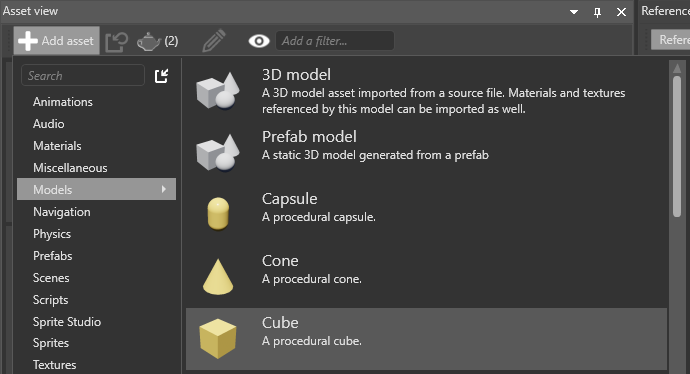
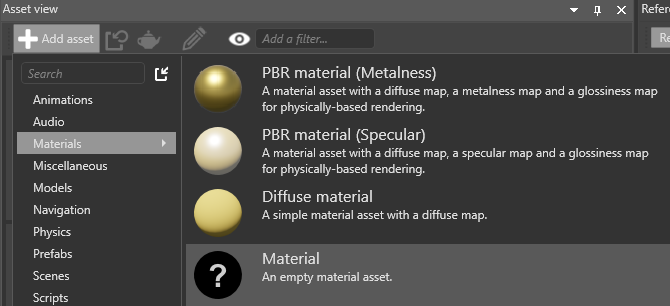
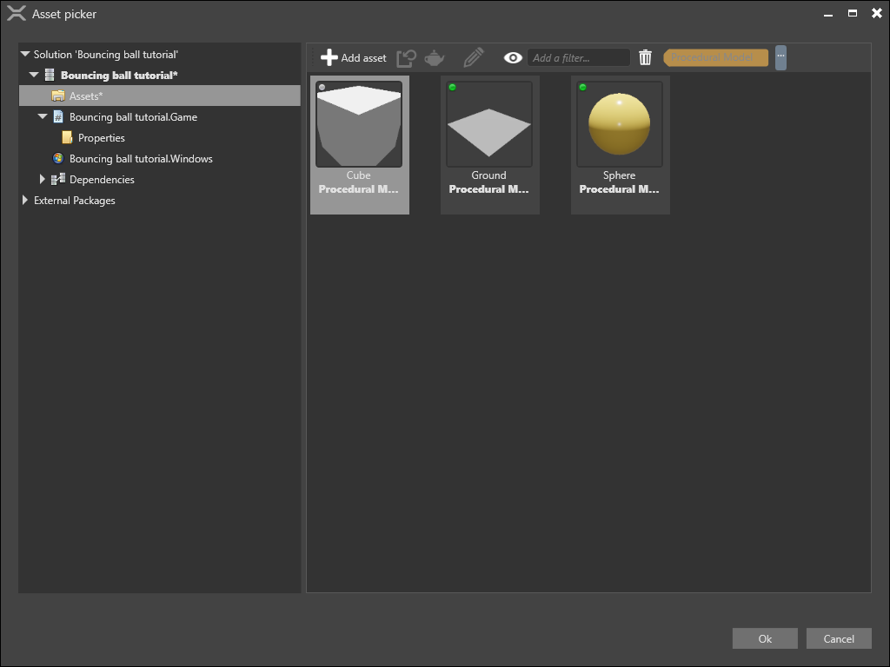
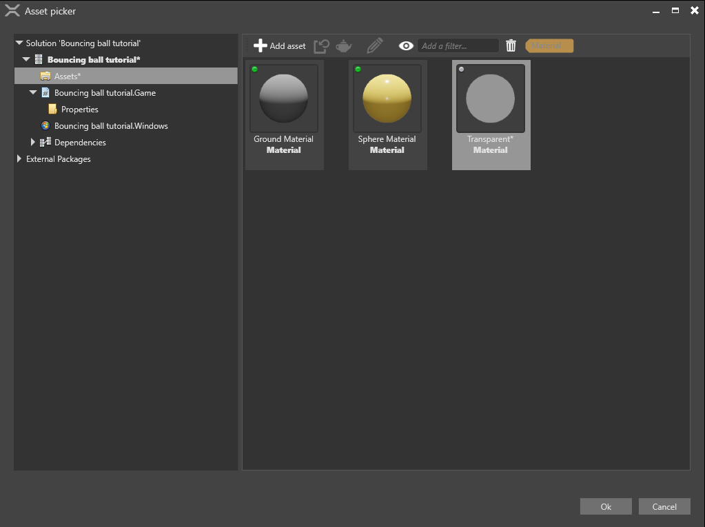

チュートリアル: トリガーをスクリプトにする
初級 デザイナー
このチュートリアルでは、通過するボールのサイズを 2 倍にするトリガーを作成します。
Note
このチュートリアルのスクリーンショットとビデオは、前のバージョンの Stride を使用して作成されました。そのため、UI の一部および既定のスカイボックスと球体は、お使いのバージョンと異なる場合があります。
1. 跳ね返るボールを作成する
「跳ね返るボールを作成する」チュートリアルの説明に従います。空中からボールが落下し、地面にぶつかって跳ね返る、簡単なシーンが作成されます。
2. 反発を設定する
このチュートリアルでは、地面と球体の反発係数を両方とも 0.9 に設定します。したがって、ボールはとてもよく跳ね返ります。このようにすると、ボールがトリガー領域に何度も出入りするので、トリガーの効果がよくわかります。
球体エンティティを選択します。
［Property grid］の［Rigidbody］で、［Restitution］を 0.9 に設定します。
地面エンティティを選択します。
［Property grid］の［Static Collider］で、［Restitution］を 0.9 に設定します。

3. トリガーを追加する
次に、ボールと地面の間にトリガーを追加し、ボールがそこを通過するようにします。
シーン エディターで、白いプラス ボタン (［Create new entity］) をクリックして、［Empty entity］を選択します。

既定の Entity という名前のエンティティがシーンに追加されます。
このエンティティをトリガーにするので、わかりやすいように名前を［Trigger］に変更します。
このトリガーは動く必要がないので、静的コライダーにします。［Property grid］で［Add component］をクリックして、［Static Collider］を選択します。

［Property grid］で［Static Collider］コンポーネントを展開してプロパティを表示します。
［Is Trigger］チェックボックスをオンにします。

これにより、コライダーがトリガーになります。つまり、オブジェクトはそれを通り抜けることができますが、その場合でもコードはオブジェクトを検出します。
トリガーに形状を与える必要があります。［Collider Shapes］の隣の
 (［Add a new item to the list］) をクリックして、［Box］を選択します。
(［Add a new item to the list］) をクリックして、［Box］を選択します。トリガーの形状がボックスになります。
トリガーの領域を大きくします。［Property grid］の［Transform］コンポーネントのプロパティで、［Scale］を X:2, Y:2, Z:2 に設定します。

トリガーのサイズが 2 倍になります。

4. トリガーにモデルを設定する
現状では、トリガーは実行時には目に見えません。トリガーの動作がよくわかるように、トリガーを透明なボックスにします。このようにしてもトリガーの動作に影響はありません。実行時にトリガーの場所がはっきりわかるようになるだけです。
新しい手続き型モデル アセットを作成します。そのためには、［Asset view］で［Add asset］をクリックし、［Models］>［Cube］を選択します。

新しい空のマテリアル アセットを作成します。そのためには、［Asset view］で［Add asset］をクリックし、［Materials］>［Material］を選択します。

マテリアルの名前を変更して見分けやすくします。右クリックして［Rename］を選択し、新しい名前 (たとえば Transparent) を入力します。
トリガー エンティティを選択します。［Property grid］で［Add component］をクリックして、［Model］を選択します。
モデル コンポーネントがエンティティに追加されます。
［Model］で
 (［Pick an asset up］) をクリックします。
(［Pick an asset up］) をクリックします。ステップ 1 で作成した［Cube］モデルを選択し、［OK］をクリックします。

［Property grid］の［Model］>［Materials］で、
(［Pick an asset up］) をクリックします。
ステップ 2 で作成した Transparent マテリアルを選択し、［OK］をクリックします。

［Asset view］で、Transparent マテリアル アセットを選択します。

［Property grid］の［Misc］>［Transparency］で、［Blend］を選択します。
既定では、［Alpha］は 1 に設定されています。これではマテリアルは完全に不透明になります。不透明度を 50% にするため、［Alpha］を 0.5 に設定します。

これで、実行時にトリガー領域が表示されるようになります。
5. トリガーを配置する
落下するボールが通過するように、地面と球体の間にトリガーを配置する必要があります。
［Property grid］の［Transform］で、［Position］を X:0, Y:3, Z:0 に設定します。
トリガー エンティティが地面と球体の間に配置されました。

6. スクリプトで球体のサイズを変更する
この状態でプロジェクトを実行すると (F5 キー)、ボールはトリガーを通過して落下しますが、何も起こりません。
トリガーに入ったらボールのサイズを変更するスクリプトを記述します。
Note
スクリプトの詳細については、「スクリプト」を参照してください。
［Asset view］で［Add asset］をクリックし、［Scripts］ >［Async Script］の順に選択します。
［Create a script］ダイアログで、スクリプトの名前を「Trigger」に設定して、［Create script］をクリックします。
2a.スクリプトを保存するかどうかを確認するメッセージが表示されたら、［Save］をクリックします。
2b.アセンブリを再ロードするかどうかを確認するメッセージが表示されたら、［Reload］をクリックします。
スクリプトを開き、内容を以下のコードに置き換えて、ファイルを保存します。
using Stride.Engine; using Stride.Physics; using System.Threading.Tasks; using Stride.Core.Mathematics; namespace TransformTrigger // このスクリプトには好みで任意の名前空間を使用できる。 { public class Trigger : AsyncScript { public override async Task Execute() { var trigger = Entity.Get<PhysicsComponent>(); trigger.ProcessCollisions = true; // 状態マシンを開始する while (Game.IsRunning) { // 1.エンティティがトリガーと衝突するのを待つ var firstCollision = await trigger.NewCollision(); var otherCollider = trigger == firstCollision.ColliderA ? firstCollision.ColliderB : firstCollision.ColliderA; otherCollider.Entity.Transform.Scale = new Vector3(2.0f, 2.0f, 2.0f); // 2.エンティティがトリガーから出るのを待つ Collision collision; do { collision = await trigger.CollisionEnded(); } while (collision != firstCollision); otherCollider.Entity.Transform.Scale= new Vector3(1.0f, 1.0f, 1.0f); } } } }このコードは、トリガーに入ってきたすべてのエンティティのサイズ (スケール) を 2 倍にします。エンティティがトリガーから出るときには、元のサイズに戻します。
アセンブリを再ロードします。
7. スクリプトを追加する
最後に、このスクリプトをコンポーネントとしてトリガー エンティティに追加します。
Game Studio で Trigger エンティティを選択します。
［Property grid］で［Add component］をクリックして、Trigger スクリプトを選択します。

8. プロジェクトを実行する
プロジェクトを実行して (F5 キー)、トリガーの動作を確認します。
ボールが落下し、トリガーを通過するときに 2 倍のサイズになり、トリガーを抜けると、通常のサイズに戻ります。
その他のアイデア
スクリプトを変更して、球体がトリガーに入ったときに他の処理を行うことができます。
たとえば、球体エンティティのマテリアルを切り替えることができます。次のスクリプトは、Sphere エンティティのマテリアルを Sphere Material から Ground Material に切り替えて、元に戻します。
using Stride.Engine;
using Stride.Physics;
using System.Threading.Tasks;
using Stride.Core.Mathematics;
using Stride.Rendering;
namespace TransformTrigger
// このスクリプトには好みで任意の名前空間を使用できる。
{
public class Trigger : AsyncScript
{
private Material material1;
private Material material2;
public override async Task Execute()
{
var trigger = Entity.Get<PhysicsComponent>();
trigger.ProcessCollisions = true;
// マテリアルがロードされていることを確認する
material1 = Content.Load<Material>("Sphere Material");
material2 = Content.Load<Material>("Ground Material");
// 状態マシンを開始する
while (Game.IsRunning)
{
// 1. エンティティがトリガーと衝突するのを待つ
var firstCollision = await trigger.NewCollision();
var otherCollider = trigger == firstCollision.ColliderA ? firstCollision.ColliderB : firstCollision.ColliderA;
// 2. エンティティのマテリアルを変更する
otherCollider.Entity.Get<ModelComponent>().Materials[0] = material2;
// 3. エンティティがトリガーから出るのを待つ
Collision collision;
do
{
collision = await trigger.CollisionEnded();
}
while (collision != firstCollision);
// 4. マテリアルを元のものに戻す
otherCollider.Entity.Get<ModelComponent>().Materials[0] = material1;
}
}
public override void Cancel()
{
Content.Unload(material1);
Content.Unload(material2);
}
}
}